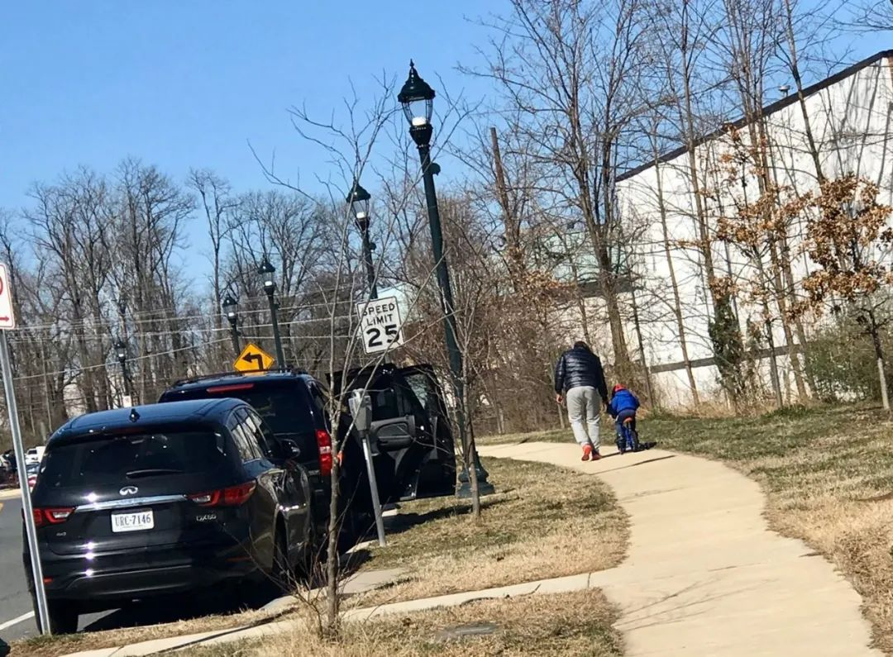
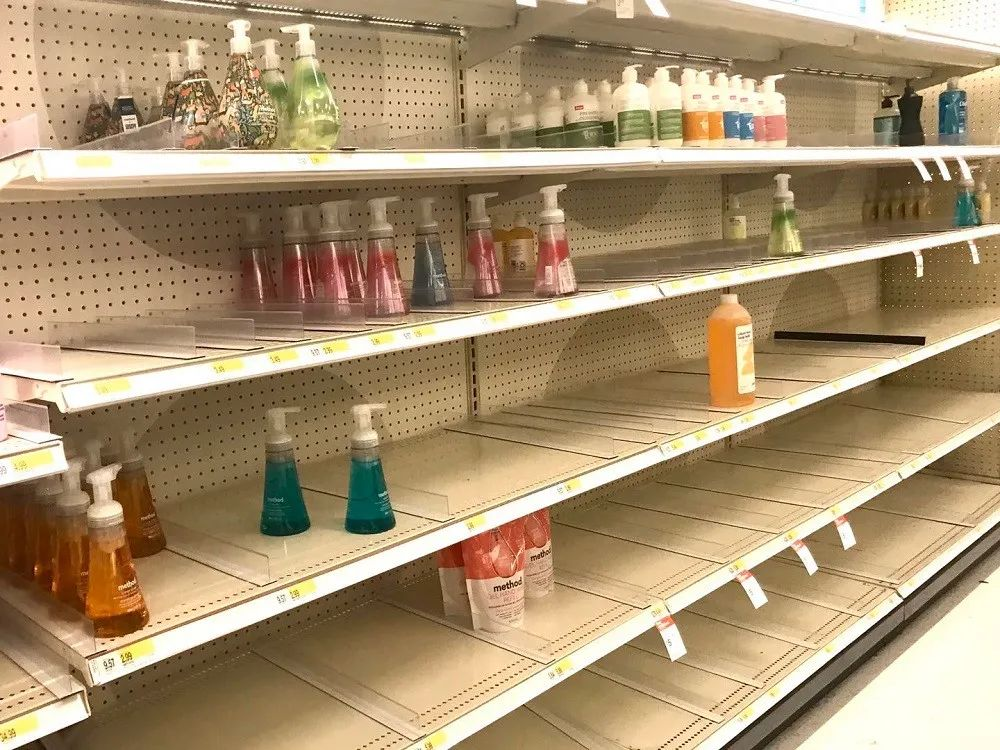

首都及32州已“沦陷”，特朗普：我一点都不担心，集会照办
原文链接 备份链接 2月29日，特朗普出席“保守派政治行动大会”。图片来源：CPAC/Twitter 记者 | 潘金花 “ “我一点都不担心。”美国总统特朗普告诉记者，自己不会因为新冠肺炎疫情而取消政治集会。要 ” “我一点都不担心。” …


文 |《财经》特派记者 金焱 发自华盛顿
编辑 | 苏琦
2020年3月6日，我打算给自己放一天的假。
算起来自从武汉疫情暴发，我在1月21采写了第一篇文章《美确诊首例新型病毒病例，或成全球性公共卫生危机事件信号》起，好像每周我都有最少四五篇文章，完全打乱了我生活和工作的节奏，几乎24小时被疫情消耗所有的关注和喜怒哀乐。3月6日是周五，我在想从工作中“喘口气”的迫切中醒来。
3月6日当天，湖北非武汉地区首次实现零新增，同时全球感染人数超过了十万——自从微信公众号把10万+作为了爆款文章的尺度后，我对十万这个数字变得比较敏感。全球感染10万+的信息让我打开了电视。MSNBC正在播疫情的消息。这个新闻频道和CNN、FOXNEWS互相竞争，在过去的几个月里都在集中力量报道美国大选。武汉疫情暴发后，尽管美国病例数不断增加，但在最初的一个月内，MSNBC基本没有任何疫情的消息。直到最近不到半个月的时间，才开始报道冠状肺炎疫情。
3月6日下午4点整的新闻播报中，MSNBC报道说，“西南偏南大会”被主办方宣布取消。这是一个为期两周的集科技、电影和音乐等内容的大会，原计划3月13日开始。在各种大型活动纷纷取消之际，主办方奥斯汀市却铁定了心不动摇，即使一大批高科技公司、从苹果到推特，到脸书到Netflix Inc.纷纷宣布员工不会参加这一活动，即使有超过5万人签署请愿书要求取消这一活动。

一直坚持的还有我在迪拜的一个朋友。
朋友是中国的科技创业者，2月末就到了迪拜，他计划在迪拜停留足够14天后飞纽约，然后参加“西南偏南大会”。2月底的一天他问我，美国疫情变得紧张，“西南偏南大会”会不会取消？入境美国出行住宿是否会有障碍？在收到我并不乐观地回答后，他决定等等再决定。
3月6日他最后的决定还是飞纽约——因为既然主办方没取消，参会人少反而能让他更充分地体验，他说“感悟都是体验出来的”。在去飞机场的路上，他还是没底，说，“在国内这么执著要去的可能就他一个了。创业都尽可能减少曝光，为了一个’西南偏南’反而拼了，有点划不来”。
我再次收到他的信息时，他已在迪拜机场办登机手续的地方和工作人员来来回回交涉了半天。虽然不是湖北人，但他的中国护照和纽约目的地让他被迫接受了“改签并在三天后再试”的决定。我第一时间通知他西南偏南大会取消时，他人刚离开机场，显然“取消”的消息让他无法立刻接受，在上官网查了之后，他发了一个官网的取消声明给我，说，“在迪拜这么多天白呆了，睡一觉想想怎么回国吧。”
虽然疫情一步步扩散，但无论是在迪拜的朋友，奥斯汀市的决策人以及大部分美国人估计都和我一样，虽然天天关注全球疫情，也有心理准备，但仍是未能料到美国疫情扩散的速度如此之快。
3月6日当天，欧洲感染人数攀升至7300人，三天内翻了一倍多，全线拉响警报；美国早就从疫情集中在西海岸变成全线扩展，6日当天，宾西法尼亚州、印第安纳州、明尼苏达州、内布拉斯加州都报告了首例感染病例。佛罗里达州也在6日宣布，该州两名有国际旅行经历的居民因感染新冠病毒而死亡，确诊病例同时也增加到5例。美国东岸地区由此打破了无死亡病例的纪录。
尽管我不相信各种对疫情会造成多少人生病、死亡的预测，却在《商业内幕》的报道中看到，代表美国上千家医疗院所的美国医院协会（American Hospital Association, AHA）在2月26日曾召集医界专家，召开网络研讨会，其中有专家在会上表示，美国预计会出现多达9600万个确诊病例、480万人需住院治疗，有48万人因此丧命。于是我回想起2020新年伊始，我看到的一个贴子说，2020是庚子年，上个庚子年是大饥荒，上上个庚子年是八国联军和《辛丑条约》，上上上个庚子年是鸦片战争。2020庚子年注定了难过。
华府后院失火
蒙哥马利县直接与首都华盛顿相连，是美国首都城市圈华人密度最高的区域之一，也是所在马里兰州最大和人口最多的管辖区，不但富庶，还座拥世界级的美国国立卫生院，美国食品和药物管理局以及美国国家标准与技术研究所，拥有18家联邦机构总部的蒙哥马利县曾高调宣称，它领导了全美的知识经济。
全美出现新冠肺炎确诊病例324例，死亡病例14例，治愈病例10例的数据是在3月6日晚7时许出来的，那时我的一个朋友、美籍意大利人Sofia刚把车停下来。周五气温骤降，她把身上的大衣裹得更严了。见了面没有寒喧，她把一大堆问题抛给我，“今天怎么了？一排排的饭店都没什么人，主干道都没有什么车，这和平时的周五傍晚反差太大了。”
她是第二个告诉我3月6日美国首都城市圈无比怪异的人。
第一个告诉我的是某高校工作人员Dennis。每周五Dennis都是下午四点上班，所以他在业余时间开起了优步。周五是报酬丰富的一天，即使他只从早晨开到下午四点，保守地说一般也能挣150美元，叫车的人特别多。但3月6日他只挣到周五平均水平的三分之二，在大华府地区跑了一天，大多时候都是跑空车。
Dennis确定，疫情的恐慌情绪开始在首都城市圈起作用了。
蒙哥马利县前一天晚上首次确诊了三例冠状肺炎患者，一对70多岁的夫妇和一名50多岁的女性，马里兰州随即宣布该州进入紧急状态，以加快物资的运送。
最让Dennis震惊的是，首都城市圈的三个大机场也都没什么人。Dennis给我举例说，以前去机场优步车都要排队，很多时候他前面要排六、七十人，一般要等一个半小时才能排到；6日中午他到一个机场时，系统显示他前面排了20个人，结果他还是等了一个半小时才接到一个下飞机的乘客。女乘客上车后也万分不解，她告诉Dennis在飞机场里面也是空空荡荡，安静得让人感觉有些惊悚。
随着越来越多的大型活动、会议的取消，大公司的远程工作新规，无论是美国的机场还是火车站，客流量下滑已持续了一段时间，只不过最初客流量下滑因为美国境外人士飞过来的少了。进入3月份后，客流量下滑主要受美国本土的操作影响。美国铁路公司（Amtrak）发现，刚推出不久的、往返纽约和华盛顿的美国版“高铁” (Acela)直达客运火车上不来客，于是在3月7日宣布暂时取消了纽约到华盛顿两地的直达火车客运服务。
纽约的疫情来得更早更糟。纽约市的新冠病毒确诊病例一天之内从5例增加到11例，皇后区也发现了确诊病例。纽约州3月7日宣布该州进入紧急状态，那时纽约州全州范围内的确诊病例已上升到76例。
三例蒙哥马利冠状肺炎患者的消息迅速在我的朋友圈里传播着，毕竟大家都是大华府圈的人。Mark是一个艺术家，他告诉周五晚上，他在搜索了所有和三个病例相关的资料后，才出了家门。
Mark离开家的时候已经是3月6日晚上十点了。那时蒙哥马利县确诊的三名新冠肺炎患者的染病路径已经非常详细地公布出来了：他们是在埃及尼罗河的一艘邮轮上感染的病毒，邮轮上已发现了12名新冠肺炎患者，休斯顿地区也有6名确诊患者曾乘坐这艘邮轮。三名患者于2月20日回到马里兰州，其中一人于2月28日到县里的行政运作中心罗克维尔市（Rockville）的一个老年社区参加活动。活动聚集了70到100位左右的居民，员工和访客。三名患者中还有一人近日去费城参加聚会，并与那里的孩子有过接触，相关的五所学校3月6日就已关闭。三名患者3月4日才自行前往医院接受新冠肺炎病毒检测，因为此前检测只针对从中国返美的游客。好在三个患者没有出现严重病情。目前情况良好，正在蒙哥马利县的家中隔离。
我见到Mark时，他说的第一句话是，听着，我就是新冠肺炎患者的易感人群：60岁了，一大堆基础病，但是生活难道要在恐惧中度过吗？反正固有一死，死于新冠肺炎也无所谓。
很快我的一群散居在首都城市圈的朋友同时出现在门口。他们刚参加完华盛顿的一场音乐会，每个人都精心打扮了，笑意还挂在脸上，对他们来说，这是一个周五，新冠肺炎疫情只是当天的一条新闻。
后知后觉
3月7日凌晨三点左右，我回到家，一头扑进厨房。烧水，拿出生姜、枸杞子、炒决明子和蜂蜜，这是我在美国为加强免疫力、自我创造的偏方。在疫情如此靠近华盛顿后，我能做的就是给自己灌姜水了。
3月7日更多的坏消息传来。新冠肺炎感染病例在美国各地都有增加，美国版的湖北、重灾区华盛顿州当天新冠肺炎感染确诊病例已超过了100例；死亡病例一天内增加了两例，这个州的死亡病例上升到16例，而全美国不到20个死亡病例。西雅图市的星巴克雇员和微软公司雇员也和新冠肺炎感染扯上了关系；另外包括俄勒冈州、亚利桑那州、乔治亚州等在内的几个州都新增了确诊病例，包括斯坦福大学、华盛顿大学在内的大学也在取消学生到学校上课的课程，网络远程上课也被引进。
几个朋友同时在3月7日早给我发来同一条微信信息，所谓哥伦比亚大学博士在北卡开诊所的谈及美国医生间的讨论，大体内容包括病毒特性和乙肝一样，有些人有抗体，有的没有；美国生产抗病毒药的厂家这段时间都特别紧张，在屯原料，因为出院的人很大一部分没有抗体，要终身服药。
近来疫情成了所有人的所有话题；有一些来往不多的美国朋友也发邮件来，或问候或分享疫情注意事项，或让我帮忙辩析谣言还是事实，也有一些问我签证的事——这是他们想到的委婉用辞，实际上他们是想知道前两天闹得沸沸扬扬的、美国下令中国五家官媒大幅减少驻美人员的事中，我是否受到牵连。
我随即问了几个美国的专家，得到的回复说，这个说法在病毒专家中一直存在，即新冠这个病毒像乙肝病毒一样将长期在人体内存在，发作与否就看病毒的复制量，但现在还没有看到相关的学术论文。
而我的一个朋友恰巧是卖测试盒内检测物质化学原材料的，她说在疫情后工作量基本上是平时的两倍，她在质控实验室工作，每天有太多的样要检测，产品合格后才能卖。
我收到的邮件中毫无例外都有若干个美版“疫情操作手册”，比如见面不要握手，不要拥抱，不要行贴脸礼，准备一些消毒水……在疫情来到家门口时，我才开始认真核对，发现我没有一条是过关的。很多人还都是正常生活着，于是他们会很自然地张开双臂，伸手相握……我也就礼尚往来。当然，按照中式抗疫，我需要口罩——但我从来没看到美国人戴口罩，尤其在他们宣称只有病人才需要戴口罩后。
吃完午饭，我认真地考虑疫情更严重的可能，出发去购买消毒水。
风很大，但和煦的阳光，碧蓝如洗的天空，街边早春的花儿都透露着春天的气息。街上散步的人，遛狗的人，和孩子嬉戏的人，构成了一个惬意的周六生活图景。但是疫情已经来临，它在超市和商场的货架上。

我一路辗转，最后来到罗克维尔市，这里的大型超市更集中。商场人流很多，一切如常，没人戴口罩，没有抢购，没有恐慌。只是他们的购物车里，日常生活用品如卷纸、瓶装水或多或少的堆积起来。惟一的异常是在消毒用品专区、在感冒药专区和免疫力药品专区，一排排的空货架告诉我，我来晚了。
连锁超市CVS的一个工作人员告诉我，消毒用品一周前上货，三个小时就卖光了，还要等到下周四才能进货。在逛完了Target、Giant、Mom’s Market、Harris Teeter等等这些大型连锁超市后，我才意识到只有CVS给我了最清楚的信息，其他超市的工作人员的回复都是：早卖完了，什么时候补货不知道。

中间我去了一次卫生间，发现在“勤洗手，别碰脸”的美式抗疫宣传下，洗手已经无形变成了一场比赛。我旁边有两个女士，左边用劲全力地洗，右边用了三遍洗手液，我看着左边，不自觉地加大了洗手力度，看着右边，不自觉地多按了几下洗手液，突然意识到专家推荐的、唱两遍“生日快乐”的洗手时长早就过了，我已在洗手比赛中败落下来。
回到感冒药专区和免疫力药品专区，货架子空了很长时间了，没被买空的货架都换上了新的价签。一个顾客告诉我，价格凭空番一翻都无需惊奇了。
在我四处沮丧地问消毒水时，一个好心的美国大妈拉住我说，自己想办法制消毒水吧，弄点酒精、醋什么的，她就是买了一周没买到转而自己动手做了。我如梦初醒，赶紧掏出手机搜自制消毒水的材料，包括伏特加、含氯漂白水一类的。于是我二次上路，认为这一下午的时光最后总会以自制消毒水收场。但最终发现，那些材料也是在售罄之列，我最后就拎了一瓶醋回华盛顿了。
一起到华盛顿的还有一条突发新闻，华盛顿科学实验室当天下午的检验结果显示，华盛顿出现了首例新冠肺炎感染的确诊病例。患者是一名50多岁的华盛顿男性居民，他在二月下旬出现症状，3月5日住进华盛顿一家医院。据说他没有国际旅行的历史，也没有与确诊病例有过密切的接触”，目前依然在医院治疗。
我放下手机，发现华盛顿已是华灯初上。街边的饭店、酒吧纷纷开始招呼生意，变得忙碌起来。人们聚在一起，如同每一个周六夜晚，只是他们的谈资中，相信会多了冠状肺炎疫情。

▲点击图片查看更多疫情报道
责编 | 黄端 duanhuang@caijing.com.cn
本文为《财经》杂志原创文章，未经授权不得转载或建立镜像。如需转载，请在文末留言申请并获取授权。
原文链接 备份链接 2月29日，特朗普出席“保守派政治行动大会”。图片来源：CPAC/Twitter 记者 | 潘金花 “ “我一点都不担心。”美国总统特朗普告诉记者，自己不会因为新冠肺炎疫情而取消政治集会。要 ” “我一点都不担心。” …
原文链接 备份链接 随着新冠肺炎疫情的蔓延，在过去的一天，韩国、意大利、伊朗等多国新增确诊数继续上升，中国以外累计确诊病例超过15000例。 世卫组织：部分国家对新冠肺炎准备不足 当地时间3月5日，世卫组织在日内瓦召开新冠肺炎疫情例行发 …
原文链接 备份链接 境外累计确诊病例即将超过2万。美国很可能有上千例潜在感染病例以及他们的密切接触者未能被及时发现和隔离，到目前为止，“我们看到的美国官方病例数字可能只是冰山一角”。 文 |《财经》数据研究员徐进 图 |《财经》 …
原文链接 备份链接 据美国《纽约时报》汇总各州公共卫生部门公布的新冠肺炎确诊病例，截至当地时间5日下午，全美已有163例确诊病例，分布在18个州。华盛顿州公共卫生部门5日公布了一例死亡病例，使得全美死亡病例达到了12例。 数据显示，美国 …
原文链接 备份链接 根据丁香医生实时数据，截至 3 月 3 日 21:32 时，全国现存确诊病例 29930 例，累计确诊病例 80303 例，现存疑似病例 587 例。其中，重症病例 6806 例，死亡病例 2948 例， …